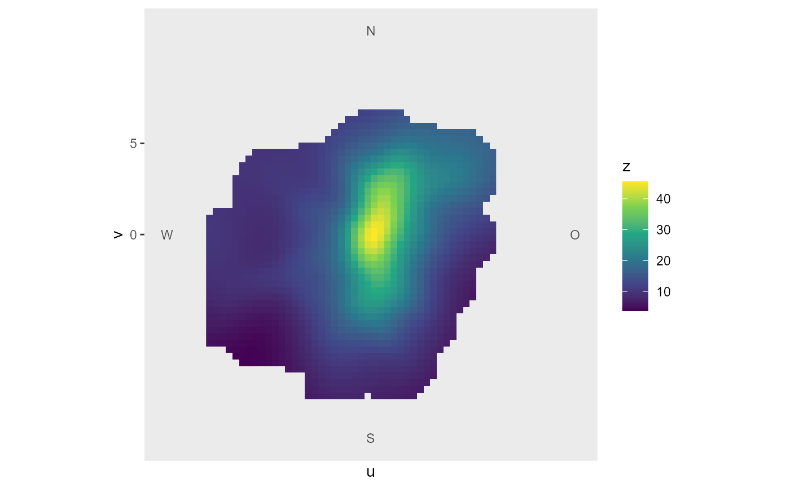

Binning is done by StatWind, so input data tostat_summary_wind() should be original unbinned data.
Depending on the groups argument, binning is either done 2-dimensional over cartesian u and v wind vectors
(calculated from input data; then, stat_summary_wind() yields results similar to openair::polarPlot())
or 1-dimensional over wind direction or wind velocity bins, respectively.
Usage
stat_summary_wind_2d(
data = NULL,
mapping = NULL,
geom = "raster",
position = "identity",
...,
fun = "mean",
fun.args = list(),
nmin = 1,
ws_max = NA,
bins = 10^2,
smooth = TRUE,
k = 100,
extrapolate = TRUE,
dist = 0.1,
na.rm = FALSE,
show.legend = NA,
inherit.aes = TRUE
)Arguments
- data
The data to be displayed in this layer. Requires input data including at least three columns carrying information regarding: * wind direction (in °) * wind velocity * z-values (e.g. air pollutant concentration)
- mapping
ggplot2 mapping, e.g. aes(wd = wd, ws = ws, z = NOx); requires wd, ws, z
- geom
The geometric object to use display the data (in this case: raster).
- position
A position adjustment to use on the data for this layer. This can be used in various ways, including to prevent overplotting and improving the display. The
positionargument accepts the following:The result of calling a position function, such as
position_jitter(). This method allows for passing extra arguments to the position.A string naming the position adjustment. To give the position as a string, strip the function name of the
position_prefix. For example, to useposition_jitter(), give the position as"jitter".For more information and other ways to specify the position, see the layer position documentation.
- ...
other arguments passed on to
ggplot2::layer()asparams = list(...).- fun
function or list of functions for summary.
- fun.args
a list of extra arguments to pass to fun.
- nmin
numeric, minimum number of values for fun, if n < nmin: NA is returned
- ws_max
numeric or NA, maximum wind velocity for binning: above ws_max, z is set NA
- bins
numeric, number of bins over the range of values if
!groups %in% c("u", "v")- smooth
TRUE/FALSE, applies if
groups = c("u", "v"); should smoothing of summary results should be performed usingfit_gam_surface()?- k
numeric, applies if smooth = TRUE; degree of smoothing in smooth term in fit_gam_surface()
- extrapolate
TRUE/FALSE, applies if smooth = TRUE; fit_gam_surface() returns extrapolated (predicted) values for u, v coordinates that otherwise would have have NA for summarised z if extrapolate = TRUE, those values are returned (to a certain degree depending on the value of dist)
- dist
numeric, fraction of 1, applies if smooth = TRUE and extrapolate = TRUE; maximum distance to next coordinate-pair at which the result of fit_gam_surface(z) should be returned
- na.rm
If
FALSE, the default, missing values are removed with a warning. IfTRUE, missing values are silently removed.- show.legend
logical. Should this layer be included in the legends?
NA, the default, includes if any aesthetics are mapped.FALSEnever includes, andTRUEalways includes. It can also be a named logical vector to finely select the aesthetics to display.- inherit.aes
If
FALSE, overrides the default aesthetics, rather than combining with them. This is most useful for helper functions that define both data and aesthetics and shouldn't inherit behaviour from the default plot specification, e.g.borders().
Computed variables
If groups = c("u", "v"): a tibble is returned, binned over u and v, with variables:
wd: wind direction corresponding to midpoint value of u and v
ws: wind velocity corresponding to midpoint value of u and v
wd_class: new bins over wd considering binwidth
ws_class: new bins over ws considering binwidth and ws_max
u: bins over u (from input wd and ws)
v: bins over v (from input wd and ws)
z: result from fun(z, ...)
If groups = NULL: groups = "wd". In this case, bins are calculated over wind direction; a tibble including wd_class and summarised z is returned
groups can be strings for other varibables in data; then fun is applied over those; a tibble including groups and summarised z is returned
Examples
library(ggplot2)
fn <- rOstluft.data::f("Zch_Stampfenbachstrasse_2010-2014.csv")
df <- rOstluft::read_airmo_csv(fn) %>%
rOstluft::rolf_to_openair()
ggplot(df, aes(x = stat(u), y = stat(v), fill = stat(z))) +
stat_summary_wind_2d(mapping = aes(wd = wd, ws = ws, z = NO2), bins = 50^2) +
coord_cartpolar() +
scale_fill_viridis_c(na.value = NA)
#> Warning: Removed 767 rows containing non-finite outside the scale range
#> (`stat_summary_wind2d()`).
#> Warning: Removed 991 rows containing missing values or values outside the scale range
#> (`geom_raster()`).
